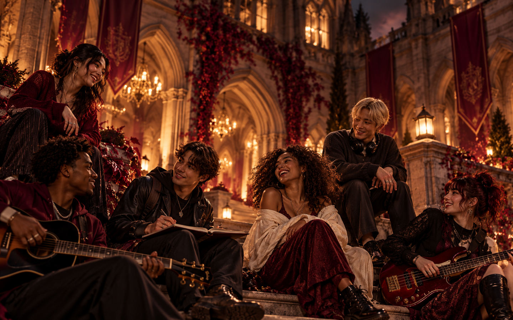

The Quad
The before. The after. The “where are you?” text. A place for hanging out, comparing plans, meeting the friend-of-a-friend and realizing the night already started before anybody got inside.
Community first · GDBU student life
The big nights count. So do the coffee run, the ride back, the afternoon in the sun and the friend who checks that everybody got home. GDBU lives wherever we gather.
The campus is wherever we gather
GDBU is the fake school we built around something real: bass under city lights, friends in the same stupid bit, a fit you remember, a track that becomes part of the story.
The before. The after. The “where are you?” text. A place for hanging out, comparing plans, meeting the friend-of-a-friend and realizing the night already started before anybody got inside.
Saved sets, records, screenshots, flyers, photos, references and the little pieces of culture worth keeping. If it shaped the night, it belongs somewhere on the shelf.
The main lecture hall. You learn the material with your whole body, forget half of it by morning and somehow remember exactly who you were standing next to when the track hit.
The experiment keeps going after the obvious ending. Debriefs, edits, bad ideas, one-more-track logic and the kind of conversations that only make sense because nobody went home yet.
Unofficial requirements
Borrowed from the original Orientation Guide and kept because it says more about GDBU than any fake admissions language ever could.
Respect the room, the music and the people already in it.
Make room. Introduce people. Nobody gets extra credit for gatekeeping.
Artists, DJs, crews, photographers, promoters, friends. Culture has authors.
The night is not over until your people are good and the space is respected.
Everyday campus life
The Preview Deck got this right from the beginning: the quiet stuff counts too. Coffee runs, scooters, sitting in the sun, hanging around with nothing scheduled. The culture is the people, not the production value.

The student-run DJ collective. Pass the aux, trade a track, leave enough room for everybody else in the mix.
Social studies in the least scientific department on campus. Talk to somebody new. Results remain wildly unpublishable.
Footwork, stamina, hydration, recovery and the advanced conditioning required to insist you are “not tired” at 1:47 a.m.
Photos, films, zines, recaps and the evidence that a night happened differently depending on who was holding the camera.
Events & fieldwork
In the original guide, shows became field labs and stories became case studies. Keep that energy: participation matters more than collecting credentials.
FIELD LAB
Clubs, festivals, warehouses, living rooms. The location changes; the assignment is to actually be there.
GROUP PROJECT
Go with friends, widen the circle, document the connection. Solo enrollment is not a failing grade.
ATTENDANCE
Perfect attendance was always lore. What matters is showing up in a way your people remember.
The Quad · Fieldwork check-in
Claim the Club Night stamp here. It follows you back to your Campus Passport on this browser.
0 / 12 fieldwork stamps
Save this night in your personal passport.
See your passport →The Quad · Nightbook · Open to everyone
A public yearbook for the people who found their way here. Leave a nickname, sign the night, and join the wall when your message is approved. No account needed.